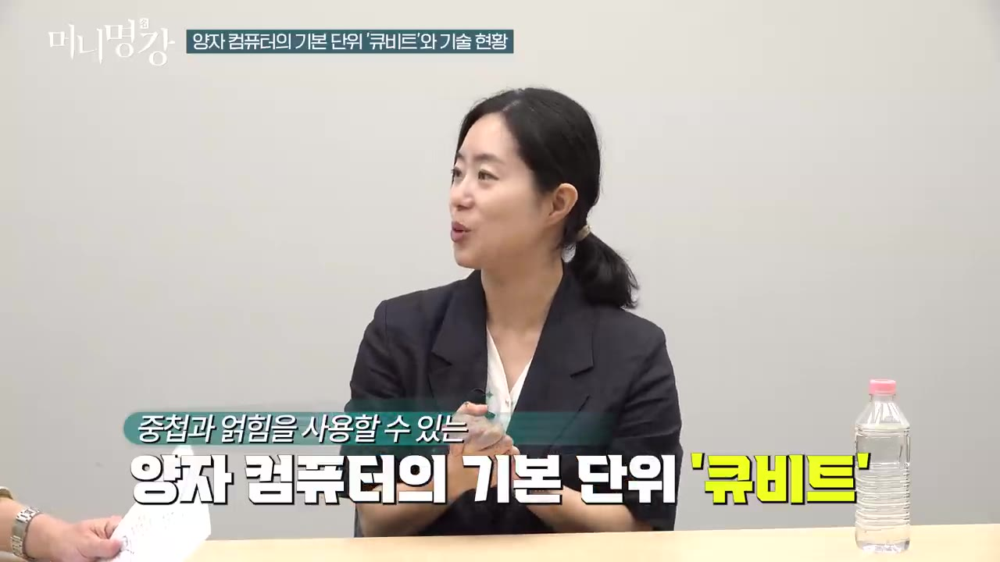
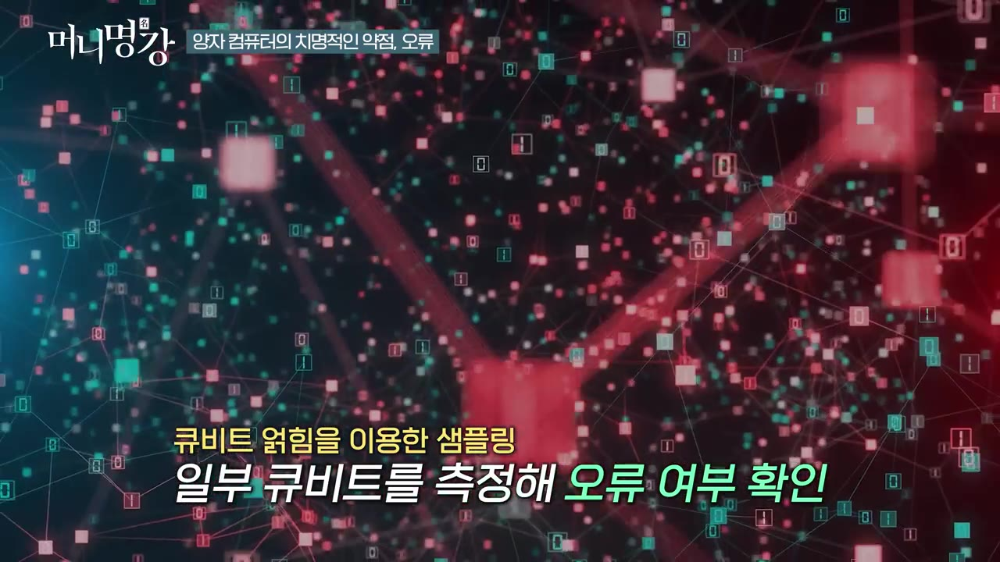
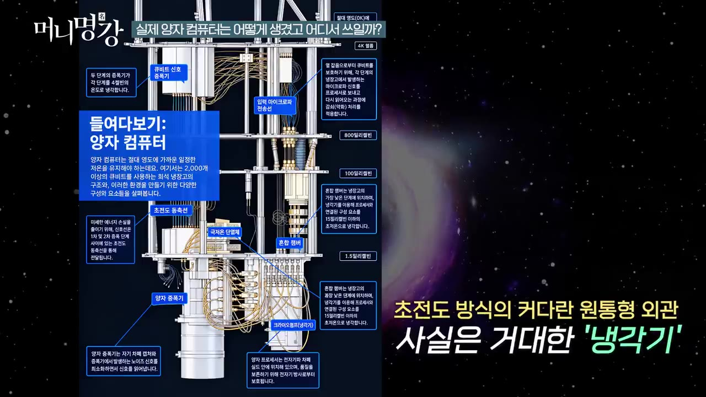
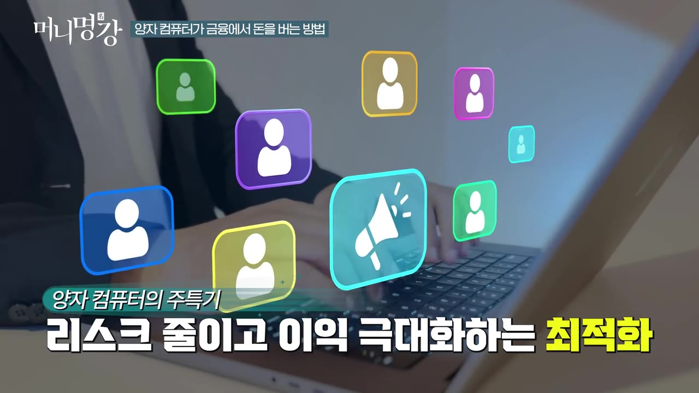
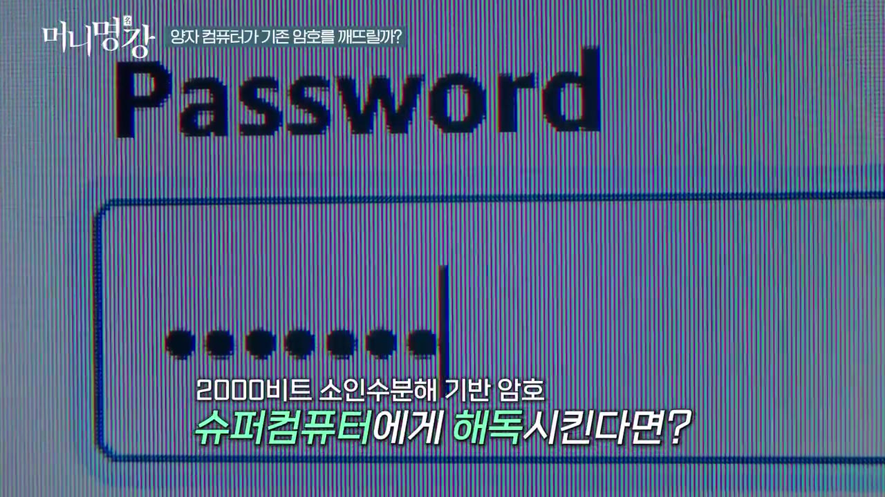
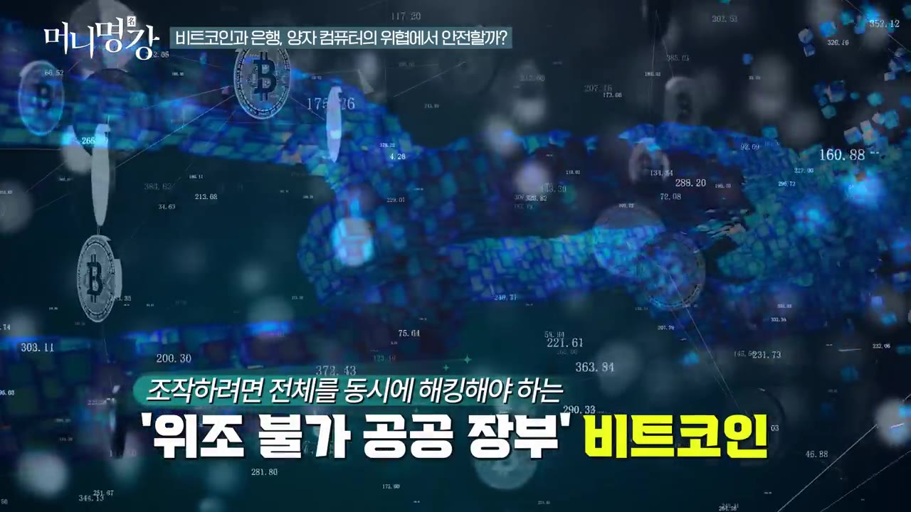
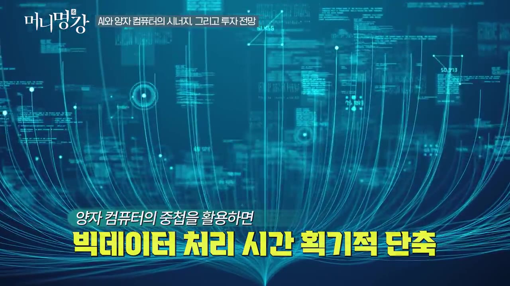

양자컴퓨터가 주식 투자하면 어떻게 될까 | 채은미 고려대학교 물리학과 교수 3부 [머니명강]
▶ 원본 영상 보기한눈에 보기
- 양자 컴퓨터의 큐비트 수는 지금 약 500~6,000개 수준이고, 업계 로드맵은 5년 안에 '100만 큐비트'에 이르는 것을 목표로 한다.
- 가장 큰 약점은 계산할수록 쌓이는 오류이며, 큐비트 여러 개를 얽어 묶고 일부만 측정해 오류를 찾아 고치는 '양자 오류 정정' 연구가 활발하다.
- 맥킨지는 양자 컴퓨팅이 가장 먼저 돈을 벌 분야로 금융을 꼽았고, 포트폴리오 구성이나 파생상품 설계 같은 '최적화 문제'에 강하기 때문이다.
- RSA 같은 소인수분해 기반 암호는 위험하다. 슈퍼컴퓨터로 약 100만 년 걸릴 해독을 미래의 양자 컴퓨터는 4~5일이면 할 수 있다고 한다. 다만 금융권과 기업은 약 5년 안에 양자 컴퓨터에 대응하는 암호로 바꿀 것으로 본다.
- 양자 컴퓨터 관련 주식에 투자해도 되느냐는 질문에 교수는 "모른다"고 답했고, 본인도 직접 투자하지 않는다고 했다.
이런 분께 도움이 됩니다
- 양자 컴퓨터 관련주나 비트코인 보안 뉴스를 보며 '실제로 어디까지 왔나'가 궁금한 투자자에게 좋습니다.
- 큐비트, 오류 정정, 양자내성 암호 같은 용어를 짧게 이해하고 싶은 분께도 맞습니다.
핵심 내용
큐비트와 기술 수준: 지금 어디까지 왔나
- 큐비트는 양자 컴퓨터가 정보를 다루는 기본 단위입니다. 일반 컴퓨터의 비트는 0 또는 1이지만, 큐비트는 중첩(0이면서 동시에 1인 상태)과 얽힘(여러 큐비트가 서로 연결된 상태)을 쓸 수 있습니다. (0:47)

- 현재 큐비트 수는 대략 1,000개 수준입니다. (1:11)
- 시스템마다 차이가 커서 적은 쪽은 약 500개, 많은 쪽은 약 6,000개입니다.
- 모든 문제를 풀고 AI와도 함께 일하는 양자 컴퓨터를 만들려면 약 100만 큐비트가 필요하다고 봅니다.
- 개발 속도가 빨라지고 있어서, 많은 로드맵이 5년 안(2030년 무렵)에 100만 큐비트를 달성한다는 목표를 잡고 있습니다. (1:57)
가장 큰 약점: 오류와 '양자 오류 정정'
- 지금 가장 좋은 양자 컴퓨터도 계산 한 번마다 일정한 오류율이 있습니다. 수치는 자막상 불분명합니다("0. 한 00 1%"로 들림). (2:19)
- 큰 계산은 계산을 여러 번 되풀이하므로 오류가 쌓여 답이 틀어집니다. 그래서 오류를 알아채고 고치면서 계산하는 양자 오류 정정이 핵심 연구 과제입니다.
- 일반 컴퓨터도 '다수결'로 오류를 고칩니다. 1비트로 충분한 값을 일부러 8개씩 묶어 두고, 그중 하나만 값이 다르면 그것을 틀린 것으로 보고 고칩니다. (3:05)
🔁 양자 오류 정정이 작동하는 순서
- 큐비트 묶기
- 계산 진행
- 일부만 측정
- 오류 위치 찾기
- 고치고 계속
- 1큐비트 묶기
큐비트 여러 개를 양자 얽힘으로 한 묶음으로 만든다
- 2계산 진행
묶음 단위로 계산을 한다
- 3일부만 측정
계산 도중 한두 개만 샘플로 측정한다
- 4오류 위치 찾기
측정 결과를 보고 "5번 큐비트에 에러가 났다"는 식으로 판단한다
- 5고치고 계속
오류 난 큐비트를 고치면서 계산을 이어 간다

💡 큐비트 개수만큼 오류를 잡는 기술이 중요하다. 오류가 쌓이면 큐비트가 많아도 답이 틀린다.
실제 양자 컴퓨터의 모습과 쓰는 방법
- 직접 구매: 기관이나 자금이 많은 곳은 한 대를 살 수 있습니다. 연세대가 송도 캠퍼스에 IBM 양자 컴퓨터를 들여놓아 그곳에 가면 볼 수 있습니다. (4:17)
- 가격은 대략 100억~1,000억 원으로 추정됩니다.
- 클라우드 이용: 일반인도 몇몇 회사가 클라우드에 올려 둔 양자 컴퓨터에 접속해, 월 단위로 돈을 내고 쓸 수 있습니다. 영상에 회사 이름은 나오지 않습니다.
- 생김새: 구글과 IBM의 초전도 큐비트 방식은 지름 약 1m, 높이 1~2m인 원통 모양입니다. (5:03)
- 이 원통의 정체는 냉각기입니다. 상온(25℃)에서는 작동하지 않고, 절대 0도(-273℃) 가까이 냉각해야 작동합니다.

- 실제 양자 컴퓨터는 냉각기 안에 든 손바닥만 한 칩입니다.
- 1940년대에 방 하나만 했던 컴퓨터가 트랜지스터와 반도체 덕분에 손바닥 크기로 작아졌듯, 양자 컴퓨터도 작아질 수 있다고 봅니다. 다만 휴대폰 크기가 되려면 큰 혁신이 한 번 더 필요하다고 합니다.
금융에서 돈을 버는 방법: 최적화 문제
- 맥킨지는 양자 컴퓨팅이 가장 먼저 돈을 벌 분야로 금융을 꼽았습니다. (7:02)
- 양자 컴퓨터는 최적화 문제(주어진 조건에서 가장 좋은 답을 찾는 문제)에 태생적으로 강합니다. 중첩 덕분에 여러 경우를 동시에 탐색하기 때문입니다. (7:27)

- 금융에서 쓸 수 있는 예는 다음과 같습니다.
- 포트폴리오 구성: 위험은 가장 낮추고 수익은 가장 높이도록 자산을 나누는 일
- 파생상품 설계: 금융회사가 여러 파생상품을 구성하는 일
- 금융회사 한 곳이 먼저 도입해 수익이 좋아지면 고객이 그쪽으로 몰리고, 다른 회사도 따라 도입하는 흐름을 예상합니다. 다만 판도가 어떻게 바뀔지는 지켜봐야 한다고 덧붙였습니다. (8:37)
💡 금융은 매일 최적화 문제를 푸는 산업이다. 그래서 양자 컴퓨터가 가장 먼저 돈이 되는 곳으로 꼽힌다.
암호 해독: 깨지는 암호와 안전한 암호
- 양자 컴퓨터가 풀 수 있는 암호와 풀 수 없는 암호가 따로 있습니다. 위험한 쪽은 소인수분해 기반 암호입니다. (9:05)
- 이 방식은 곱하기는 쉽지만, 큰 수를 거꾸로 쪼개는 소인수분해는 매우 어렵다는 점을 이용합니다.
- 대표 예는 RSA 공개키 암호로, 본인 인증과 서명 인증에 자주 쓰입니다.
- 약 2,000비트 크기의 소인수분해 기반 암호를 비교하면 다음과 같습니다. (10:12)

| 구분 | 해독에 걸리는 시간 |
|---|---|
| 슈퍼컴퓨터 (사전 정보 없이) | 약 100만 년 |
| 지금의 양자 컴퓨터 | 아직 못 깸 |
| 큐비트를 늘린 미래의 구글 양자 컴퓨터 | 약 4~5일 |
- 암호를 깬다는 것은 '열쇠', 곧 정보를 암호화하는 과정을 알아낸다는 뜻이라고 설명합니다.
비트코인과 은행은 안전한가
- 블록체인 자체는 양자 컴퓨터로도 풀기 어려운 암호여서 괜찮다고 합니다. (11:05)

- 거래 단계의 서명과 본인 인증은 취약해집니다. 이것이 뚫리면 남이 자산을 가져갈 수 있습니다.
- 아직 시간이 있다고 봅니다. 양자 컴퓨터가 완성되기 전에 기업과 금융기관이 양자 컴퓨터에 대응하는 암호 체계로 먼저 바꿀 것으로 예상합니다. 시점은 약 5년 안입니다. (11:47)
💡 위험한 것은 블록체인이 아니라 '거래 서명'이다. 그리고 그 서명용 암호는 양자 컴퓨터보다 먼저 바뀔 것으로 본다.
AI와 양자 컴퓨터의 시너지
- AI가 양자 컴퓨터를 돕는 방향: 양자 컴퓨터를 개발할 때 여러 변수를 조정하는 일과 오류를 더 빨리 고치는 일에 AI를 쓰고 있습니다. (12:33)
- 양자 컴퓨터가 AI를 돕는 방향: AI는 빅데이터를 다루느라 시간이 오래 걸리는 병목이 있습니다. 중첩을 활용하면 여러 경우를 동시에 볼 수 있어 이 시간을 크게 줄일 수 있습니다. (12:57)

- AI 알고리즘을 양자 알고리즘으로 빠르게 만드는 양자 AI 연구가 활발합니다. 다만 아직은 이론 연구 단계입니다.
양자 컴퓨터 관련주 투자, 교수의 답
기억할 숫자·인용
- 현재 큐비트 수: 약 500~6,000개 (평균 약 1,000개 수준)
- 범용 양자 컴퓨터에 필요한 큐비트: 약 100만 개, 로드맵상 목표는 5년 안(2030년 무렵)
- 양자 컴퓨터 한 대 가격: 약 100억~1,000억 원
- 작동 온도: 약 -273℃ (절대 0도), 초전도 방식 장비 크기는 지름 1m·높이 1~2m
- 2,000비트 RSA 해독 시간: 슈퍼컴퓨터 약 100만 년, 미래 양자 컴퓨터 4~5일
- 금융권이 양자 대응 암호로 바꾸는 데 걸릴 기간: 약 5년
- "지금 사서 100년 기다리면 당연히 오르겠죠. 근데 사람의 유한한 시간 안에서 함부로 권하기가 너무 어렵습니다."
- 출연자 이름은 영상 제목에 '채은미', 설명란에 '최은미'로 서로 다르게 적혀 있습니다 (확인 필요).
생각해볼 점
- (영상 내용) '4~5일 만에 해독'은 큐비트를 크게 늘린 미래 장비를 가정한 수치입니다. 지금의 양자 컴퓨터로는 깨지 못한다고 영상에서도 분명히 말합니다. (내 의견) 뉴스 제목의 "암호가 다 뚫린다"와는 거리가 있습니다.
- (내 의견) 금융 최적화에서 양자 컴퓨터가 실제로 기존 컴퓨터보다 낫다는 사례는 영상에 나오지 않았습니다. "다들 그렇게 보고 있다"는 전망 수준으로 받아들이는 게 맞습니다.
- (내 의견) 비트코인의 거래 서명을 양자 대응 암호로 바꾸려면 탈중앙 네트워크 전체가 합의해야 합니다. 그래서 은행보다 전환이 느릴 수 있으며, 이는 영상에서 다루지 않은 부분입니다.
바로 해볼 일
- 갖고 있는 양자 컴퓨터 관련주가 있다면 '이미 기대가 주가에 반영됐는지' 점검해 보기 (교수도 이 부분을 가장 어렵다고 함)
- 쓰는 은행·증권사·거래소가 양자내성 암호(PQC) 전환 계획을 발표했는지 검색해 보기
- 비트코인을 갖고 있다면 거래와 보관 단계의 보안(지갑·서명 방식) 관련 뉴스를 챙겨 보기